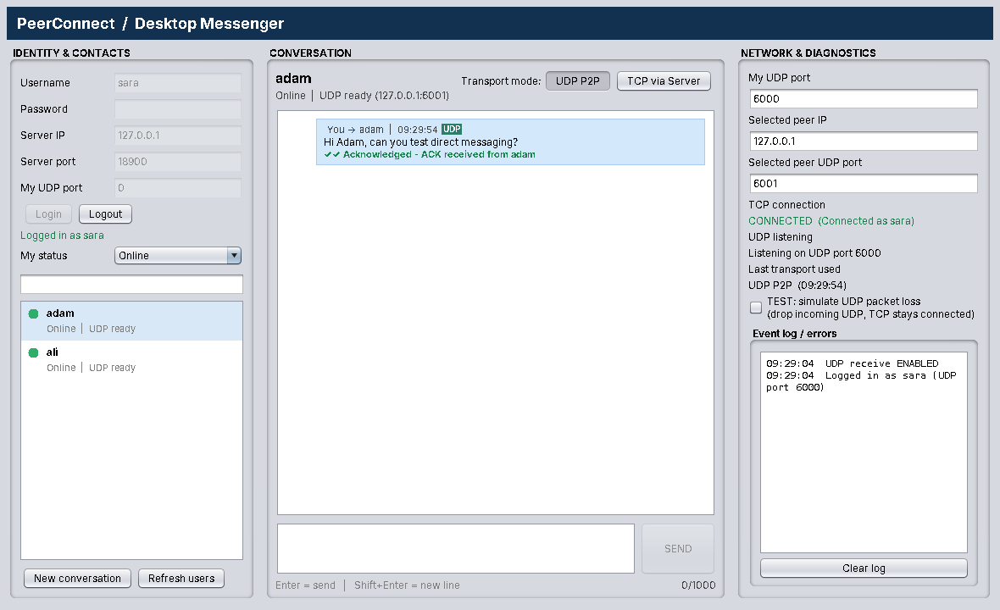
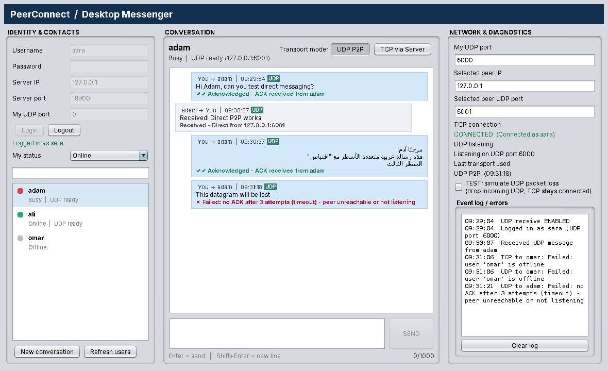
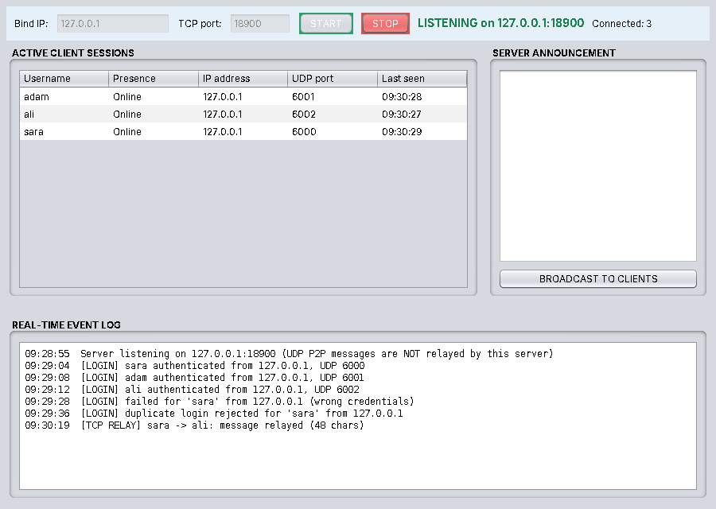
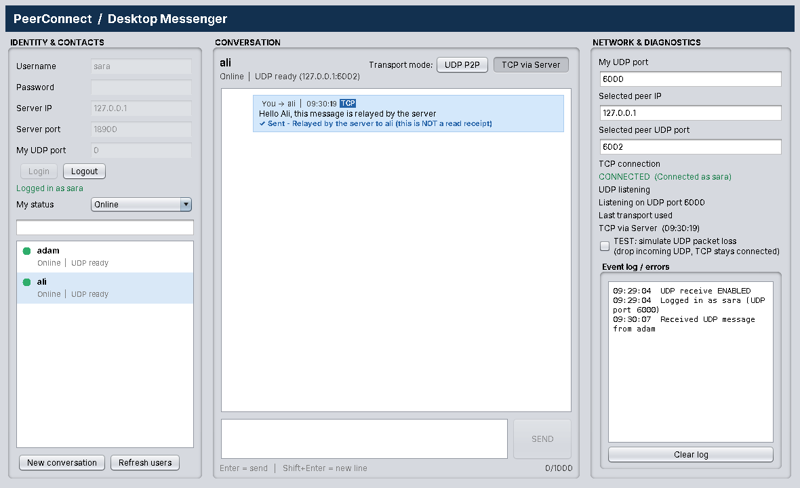

PeerConnect is a desktop text messenger written in Java 17 (sockets + Swing, no third-party libraries). One central server (TCP) and any number of clients. Three functional parts: A TCP control plane, B UDP peer-to-peer chat (server NOT involved), C TCP chat relayed by the server. Modules: common (JSON codec, framing, validation, UDP packet, PBKDF2, dedup cache), server (ServerMain, PeerConnectServer, ServerFrame), client (ClientMain, MessengerClient, TcpLink, UdpEngine, ClientFrame), tests.
| UDP P2P message (A → B) | TCP via Server message (A → C) |
|---|---|
1. A sends PEER {username:B} over TCP; server answers B's current ip + udpPort (or OFFLINE).2. A's UdpEngine sends CHAT_UDP straight to B's socket (attempt 1, status Sent).3. B's receive thread validates, ACKs with ACK_UDP (same messageId) to the datagram's source address, and shows the message once.4. A's receive thread matches messageId + expected peer → cancels retries → status Acknowledged. No ACK within 1 s → resend (max 3 sends) → Failed. The server is not on this path. |
1. A sends CHAT_TCP {to:C,text,messageId} on its TCP connection.2. The server validates text (1–1000 chars), looks up C in the directory, queues an EVENT CHAT_TCP frame on C's outbox (only C).3. Server replies to A: {ok:true,status:"RELAYED"} or {ok:false,error:"OFFLINE"…}.4. C's reader thread validates again and displays it. A shows Sent — relayed by the server (not a read receipt). RELAYED means "server wrote it to C's connection", not "C read it". |
TCP framing: JSON Lines — one JSON object per line, UTF-8, terminated by \n. All user text is JSON-escaped (\n, \", \\, control chars as \u00XX), so a frame never contains a raw newline. Max frame 32 KiB (LineReader skips an over-long/invalid-UTF-8 line and replies FRAME_TOO_LARGE/BAD_ENCODING, staying aligned). Client → server: {"id","cmd",…}. Server → client: {"type":"RESPONSE","id",…,"ok"} answers exactly one request (matched by id); {"type":"EVENT","event",…} are asynchronous (USERS_UPDATE, CHAT_TCP, ANNOUNCEMENT, SERVER_SHUTDOWN). Own JSON codec (common/Json.java) to avoid external dependencies.
| Op | Request (client → server) | Response / event (server → client) — captured from the running server |
|---|---|---|
| LOGIN | {"id":"r1","cmd":"LOGIN","username":"sara","password":"…","udpPort":6000} | {"type":"RESPONSE","id":"r1","cmd":"LOGIN","ok":true,"username":"sara","ip":"127.0.0.1","udpPort":6000,"users":[{…}]} · errors: BAD_CREDENTIALS, DUPLICATE_LOGIN, ALREADY_LOGGED_IN, BAD_REQUEST |
| LOGOUT | {"id":"r8","cmd":"LOGOUT"} | {"type":"RESPONSE","id":"r8","cmd":"LOGOUT","ok":true} then others get USERS_UPDATE |
| USERS | {"id":"r2","cmd":"USERS"} | {"type":"RESPONSE","id":"r2","cmd":"USERS","ok":true,"users":[{"username":"adam","ip":"127.0.0.1","udpPort":6001,"presence":"Online","lastSeen":1794994375668}]} |
| PRESENCE | {"id":"r3","cmd":"PRESENCE","status":"Busy"} | {"type":"RESPONSE","id":"r3","cmd":"PRESENCE","ok":true,"status":"Busy"} + event {"type":"EVENT","event":"USERS_UPDATE","users":[…]} to all |
| PEER (discovery) | {"id":"r4","cmd":"PEER","username":"adam"} | {"type":"RESPONSE","id":"r4","cmd":"PEER","ok":true,"peer":{"username":"adam","ip":"127.0.0.1","udpPort":6001,…}} or "error":"OFFLINE" |
| CHAT_TCP | {"id":"r5","cmd":"CHAT_TCP","to":"adam","messageId":"s1a2b3c4d-7","text":"مرحبا\nسطر ثان \"اقتباس\""} | sender: {"type":"RESPONSE","id":"r5","cmd":"CHAT_TCP","ok":true,"status":"RELAYED","messageId":"s1a2b3c4d-7"} · recipient only: {"type":"EVENT","event":"CHAT_TCP","messageId":"s1a2b3c4d-7","from":"sara","to":"adam","text":"…","timestamp":…} · error: {"ok":false,"error":"OFFLINE","message":"User 'omar' is offline"} |
| PING / timeout | {"id":"r7","cmd":"PING"} every 5 s | {"type":"RESPONSE","id":"r7","cmd":"PING","ok":true,"pong":true,"serverTime":…}. Server closes a session silent for 15 s (stale); client treats 15 s of server silence as a dead connection. |
UDP datagram (JSON, UTF-8, one per datagram, receive buffer 8192 B ≥ worst case 1000 chars × 6 B escaping + envelope): {"v":1,"type":"CHAT_UDP","messageId":"s1a2b3c4d-7","sender":"sara","recipient":"adam","timestamp":1794994375788,"payload":"text"} and {"v":1,"type":"ACK_UDP","messageId":"s1a2b3c4d-7","sender":"adam","recipient":"sara","timestamp":…,"payload":""}. Fields, type, recipient and text (1–1000 code points) are validated on receive; malformed datagrams are logged and dropped. IDs are s<random32bit>-<counter>, unique per client login session. Arrival order is never relied upon: every datagram is self-contained and ACKs are matched by messageId. Passwords are never placed in a UDP datagram.
pc-server-* and joined in stop().UserDirectory = ConcurrentHashMap; duplicate-login check is the single atomic putIfAbsent (a containsKey+put pair would race); cleanup uses remove(user, session) so an old session can never delete a newer one. Counters/flags are volatile/atomic.pc-client-control (login/logout), pc-client-work-N (PEER lookup, sends), pc-client-tcp-reader, pc-client-tcp-writer (single writer ⇒ no frame mixing), pc-client-udp-recv, pc-client-udp-retry, pc-client-heartbeat. Results return through MessengerListener and are re-posted with SwingUtilities.invokeLater. No get()/join()/socket call is made on the EDT.Session (new UDP socket, TCP link, message-id prefix). Logout/connection loss calls an idempotent teardown that closes sockets, cancels pending retries, and shuts the executors down; nothing from an old session can fire later (test T21).| Event | Sender (UdpEngine) | Receiver |
|---|---|---|
| t = 0 s | send #1 (status Sent, attempt 1/3), start 1 s timer | validate → dedup check → ACK → display (once) |
| t = 1 s, no ACK | send #2 same messageId (attempt 2/3) | duplicate: ACK again, not displayed again |
| t = 2 s, no ACK | send #3 (attempt 3/3) | same |
| t = 3 s, no ACK | status Failed (no ACK after 3 attempts) | — |
| ACK arrives | matched by messageId and expected peer name → timer cancelled → Acknowledged | — |
done flag; ACK handler, timer and logout-cancel all take the monitor and check done, so exactly one of {ACK, timeout, cancel} wins. The registry is a ConcurrentHashMap; remove(id, p) is value-checked.DedupCache keyed by sender|messageId, ≤ 4096 entries, 10-min TTL (insertion-ordered purge). Lost-ACK case (T12): receiver shows 1 message, sender succeeds on attempt 3; if all ACKs are lost the sender shows Failed although the peer has the message — hence no guaranteed delivery is claimed.



| TCP (control + "TCP via Server") | UDP (P2P chat) | |
|---|---|---|
| Connection | connection-oriented, one persistent connection per client to the server; EOF/RST detected immediately (T14, T15) | connectionless; a datagram socket per client, no handshake; peer unreachable is only detected by missing ACK |
| Routing | client → server → recipient (server sees plaintext + payload, logs only sizes) | client → client directly using IP:port learned from the server; server never sees payload (T07: relay counter 0) |
| Ordering | byte stream, in-order, framing by newline | no ordering guarantee; each datagram self-contained, ACKs matched by messageId |
| Reliability | transport-level retransmission; but TCP success ≠ application delivery (we only know the server relayed it) | none from the network; we add ACK + 2 retries + dedup: loss → Failed after ≈3 s (T11), lost ACK → duplicate suppressed (T12, T13) |
| Observed behaviour | LAN/loopback latency ≈ ms; 6 clients exchanged 30 messages with no loss (T06); server restart is noticed instantly by all clients | direct path ≈ 1 RTT to ACK (T07 ≈ ms); with receiver dropping UDP the sender needed exactly 3 transmissions at 1.0 s spacing (measured 0.9–1.5 s tolerance) |
Unencrypted authentication: LOGIN passwords and all TCP/UDP chat text travel in clear text (allowed by the assignment for classroom testing only). Anyone on the path can read or alter them; there is no TLS, no replay protection, and UDP sender names can be spoofed on an untrusted LAN. On the server, passwords are stored only as salted PBKDF2-HMAC-SHA256 (120 000 iterations, 16-byte random salt per account); they are never written to logs. Other limits: in-memory history only; UDP across NAT needs an overlay (Tailscale/ZeroTier) — not verified here (no second network available); Maven build not executed in the authoring environment (compiled with javac, see README).
23 real-socket integration tests (all executed and passed, twice) and a 35-check GUI scenario on real Swing windows (all passed) — see TestCases.pdf. Items needing humans/second machine are listed there as Manual Verification Required (Maven build, LAN/two-network test, real keyboard, narrated video).
| Component | Student 1: YOUR_NAME_1 (YOUR_ID_1) | Student 2: YOUR_NAME_2 (YOUR_ID_2) |
|---|---|---|
| Server (auth, directory, relay, GUI) | Template — fill in the real contribution of each student (not invented here) | |
| Client networking (TCP link, UDP engine, ACK/retry) | … | |
| Client GUI, protocol, tests, documentation, demo | … | |